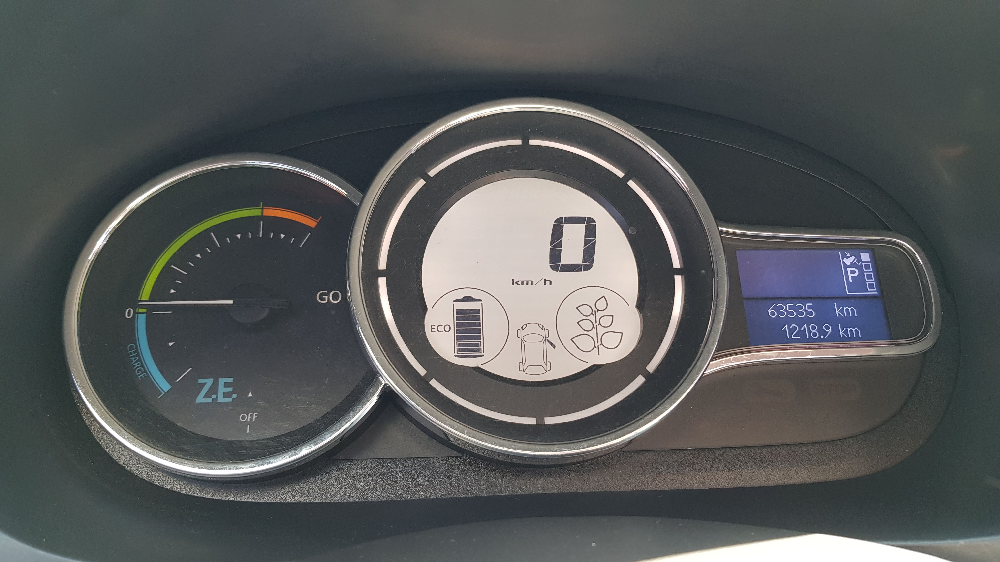

2021-10-11 15:50:00
얼마전 제주도 여행을 다녀오면서 '오라렌트카' 에서 'SM3 ZE 전기차'를 4박 5일동안 렌트한 소감이다
기대
처음으로 전기차를 렌트했는데 일단 다음과 같은 점 때문에 렌트했다
* 전기차를 타보고 싶었다. 다음 번에 차를 살 때는 왠지 전기차를 사게 될 것 같아서 미리 경험해보고 싶었다
* 그나마 전기차라서 연식이 오래되지 않았다. 2019년식이었음
* 전기차가 일반차보다 렌트 가격이 약간이나마 싸다. 참고로 아이오닉5는 최신 전기차라서인지 훨씬 더 비싸다
* 작년 제주도 여행에서 여행지마다 전기차 충전소가 보여서 제주도에서의 충전은 쉽게 될 것 같았다
* 충전료가 주유비보다 저렴할 거라 생각했다
타보니
- 엑셀을 밟으니 잘 나간다. 정말 시속 100km 까지는 슈웅 나간다는 느낌이다. 와이프 말로는 xx랜드의 범퍼카 타는 느낌이란다
- 조용하다는 건 잘 모르겠다. 원래 내 차가 하이브리드 차다...
 - 계기판이 깔끔하다. 하이브리드 차를 타면 엔진과 모터 계기판이라서 더 복잡하기도 한데, 전기사용현황(+충전현황)과 남은 배터리 상황, 속도 정도만 보여줘서 계기판이 깔끔하다
- 충전료는 생각보다 엄청 저렴하지는 않았다. 무제한 충전권을 대여하는데 2만 5천원이었는데, 대략 300km 정도 운전했고, 충전하는데 1만 5천원쯤 충전료가 표시되었다. 무제한 충전권을 대여했기 때문에 당연히 추가 요금을 내지는 않았다. 숙소 앞 바다에서 이틀을 놀았기 때문에 운전을 적게 한 것을 고려하면 4박 5일에 대한 충전권 대여료는 적절한 듯.
- 충전소 찾는건 EV Infra 라는 app을 스마트폰에 설치하거나, https://www.ev.or.kr/evmonitor 사이트를 참고
단점은 자세히
- 배터리 때문인 것 같은데, 트렁크가 꽤 작다. 4명 가족이 캐리어 2대를 넣으니 매우 빡빡했다
- 작은 관광지에는 충전소가 없는 곳이 많다. 작년에 제주도에 방문했을 때는 매우 유명한 곳을 다녔기 때문에 충전소가 매우 많다고 느꼈는데, 올 해 다시 방문하니 작년에 방문했던 곳 중에 정말 좋았던 곳만 다시 방문하고 나머지는 그나마 덜 유명한 곳에 방문했는데 충전소가 없는 곳도 많았다
- 전기차는 충전 방식이 여러개 있다. SM3 ZE는 'AC3상' 이라는 충전방식이었는데, 이게 없어져가는 충전 방식이다. 좀 찾아보면(https://young.hyundai.com/magazine/motors/detail.do?seq=18031), 국내는 'DC콤보' 가 표준이 되었고, 앞으로는 'DC콤보' 방식만 사용하게 될거란다. 'AC3상'은 구형 충전기 혹은 여러 충전 방식을 지원하는 충전기에서 볼 수 있다. 참고로 내가 이번에 방문한 관광지에서는 '조랑말 체험공원', '정방폭포'에서만 지원해줬다. 이렇게 충전 방식이 나뉘다보니 생각보다 충전소 갯수가 여유롭지 않았다
- 충전 시간이 꽤 오래 걸린다. '급속' 충전이지만 배터리가 20% 남았을 때 충전을 시작했는데 1시간을 충전해도 95% 정도까지 밖에 충전이 되지 않았다. 충전을 걸어놓고 관광지를 둘러보면 딱 좋긴 한데, 충전 때문에 여행와서 별도로 시간을 쓰기는 아깝다
- 계기판에서 남은 주행거리를 표시해주지만, 충전이 오래 걸리고, 충전소의 충전 단자 종류가 나뉘어져있고, 다른 사람이 충전 중일 수도 있기 때문에 남은 주행거리가 어느 정도 떨어지게 되면 마음이 불안해진다. 참고로 3종류의 단자를 지원하는 충전기가 3종류 중 2종류는 고장이 나 있는 경우도 2번 보았다 ㄷㄷ
다음에는
- 숙소에 충전이 가능하고 충전 종류가 맞다면 무조건 전기차를 이용할 것 같다
- 가격/연식을 고려해서 전기차가 더 나으면 전기차를 이용할 것 같다. 특히 DC콤보 방식의 전기차는 다시 도전해볼만할 듯 하다
렌트 업체
- 제주속으로(https://jejussok.com/)라는 사이트에서 예약했는데 오라렌트카에서 차를 받았다. 제주속으로 라는 업체는 제주의 소규모 렌트카들의 예약 대행 같은 느낌이었다. 오라렌트카는 또 제주로렌트카와 갤럭시렌트카와 같은 사무실에서 렌트를 해주고 있었다. 뭔가 의아하긴 하다. 연합의 연합체... 하지만 결론적으로는 나쁘지 않았다
- 오라렌트카는 작년에 이용했던 스타렌트카와 다르게 인터넷에서 바로 차량 확정이 가능했고(스타렌트카는 이상하게 인터넷에서 예약 후 전화로 다시 확정을 해야했다), 카카오톡으로 온 url을 통해서 운전면허등을 미리 등록할 수 있어서 미리 등록해놓으면 현장에서 빠르게 서류처리가 가능해서 좋았다
- 소규모 업체에서는 사고 발생 시 문제가 있다고들 하는데 사고가 안나서 별 문제는 없었다. 차를 빌릴 때 휴대폰 등으로 미리 사진을 여기저기 찍어두기도 했고(업체에서도 미리 찍기를 권한다), 잔기스 등으로 문제 삼지도 않아보였다
- 전기차 무제한 충전권을 대여했기 때문에 반납시 충전량으로 추가 요금을 내지도 않았다